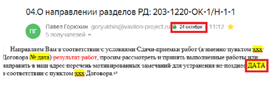

Шаг 1. Согласно схеме ОУП, фиксируем в таблице дату начала этапа. Ей считается дата отправки письма Заказчику о направлении разделов проектной документации:
Шаг 2. Согласно схеме ОУП, фиксируем в таблице дату конца этапа. Ей считается дата направленного письма о подготовке закрывающих документов в финансовый отдел
По истечению сроков, указанных в письме Заказчику о направлении разделов проектной документации и отсутствии согласования результата работ, в адрес Заказчика необходимо направить письмо об окончании срока рассмотрения ПД. В этом случае, датой конца этапа считается дата не позднее которой заказчик должен рассмотреть переданную ПД.